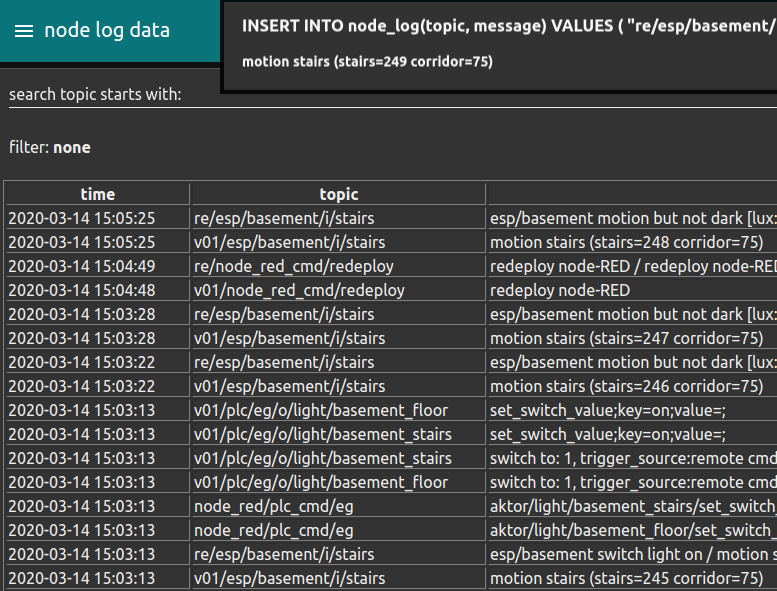

Node red¶
As control system and for the connection of other devices I currently use node-RED.
Node-RED is a programming tool for wiring together hardware devices, APIs and online services
It has already implemented interfaces (which are called 'nodes') to a lot of devices I use.
Dashboards¶
It is easy to make quick dash boards to monitor the sensor and health state of the devices.

Or to configure debug / control clients for different devices

Rule engine¶
The rule engine is a function node that is triggered by the receipt of any message.
In this example rule a sensor event from the light barrier triggers the rule engine.
If the weather station detects that it is dark two lights are switched on.
var plc_cmd = [];
var alarm_info = 'not_processed';
if(t.startsWith('v01/esp/basement/i/')){
let lux = global.get('PD.esp_basement.lux');
let switch_value = 150
if(lux<switch_value){
alarm_info = 'esp/basement switch light on'
plc_cmd.push({ payload: "aktor/light/basement_floor/set_switch_value#on", topic: "eg" });
plc_cmd.push({ payload: "aktor/light/basement_stairs/set_switch_value#on", topic: "eg" });
}else{
alarm_info = 'esp/basement motion but not dark [lux: ' + lux + '] > ' + switch_value;
}
}
// for logging or later use a new alarm is generated
// and stored at the database
if(alarm_info !== 'not_processed'){
msg.alarm = {
topic : t,
payload : p,
status : 'created',
time_created : getFormattedDate(),
info : alarm_info
}
let ret = t.replace('v01','re');
// the alarm and commands for the PLC s are returned for further processing
msg.topic = "INSERT INTO node_log(topic, message) VALUES ( \"" + ret +"\", \""+ alarm_info + " / " + p + "\" )"
return [msg, plc_cmd];
}
Here are the log messages when the motion sensor is triggered

some hints¶
Initialising Variable
var count=context.get('count') || 0;
var count2=context.get('count2') || 0;
// You can also use an object e.g
var local=context.get('data') || {};
if (local.count===undefined) //test exists
{
local.count=0;
}
my config¶
Imported Nodes (Plugins)¶
| name | usage |
|---|---|
| node-red-dashboard | frontend dashboard elements |
| node-red-contrib-fritz | get network device status / control guest wlan |
| node-red-contrib-s7 | connection to PLCs via S7 protocol, almost no longer in use (replaced by the udp protocol) |
| node-red-node-mysql | reading / writing to maria database |
| node-red-contrib-os | access to operating system bevore switching to docker |
| node-red-contrib-mqtt-broker | mqtt client |
| node-red-node-email | send alarm / notification e-mails |
| node-red-contrib-netatmo | todo check if outdated |
| node-red-contrib-netatmo-dashboard | getting netatmo weather station data from cloud-account |
| node-red-contrib-viera | control the Panasonic TV |
Downloads¶
If you are interested in the flows you can find the download link at the references.